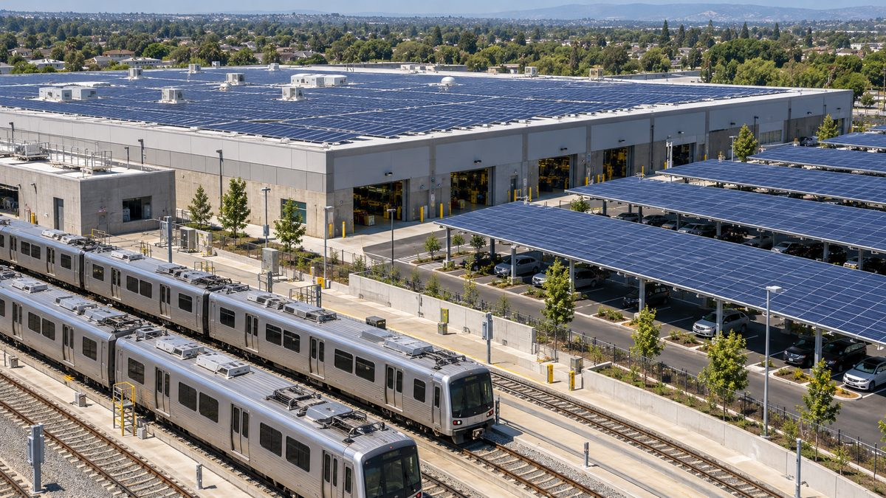

서울교통공사, 진접차량기지 옥상·주차장 4곳에 733.83kW 태양광 설치해 직접 사용…연 1억7,700만 원 절감 예상

부지를 민간에 빌려주던 방식 대신 공사가 생산 전력을 직접 쓰는 첫 차량기지 사례…연 83만5,000kWh 발전·온실가스 384톤 감축 예상, 시민 출자 없는 공공기관 직영 자가용 설비
서울교통공사가 진접차량기지 안 4곳에 모두 733.83kW 규모의 태양광 발전설비를 놓고, 여기서 만든 전기를 공사가 직접 쓰기 시작했다고 27일 밝혔다. 설비는 수전변전소 옥상과 종합관리동 옥상, 주차장 등에 들어섰으며 9월 16일 처음 가동한 뒤 18일부터 전체 설비가 돌아가고 있다. 공사는 연간 발전량을 약 83만5,000kWh로 보고, 이를 통해 해마다 전기요금 약 1억7,700만 원을 아끼고 온실가스 약 384톤을 줄일 것으로 내다봤으나, 실제 발전량과 절감액은 일사량과 설비 가동률에 따라 달라질 수 있는 예상치다. 공사는 이번 사업이 차량기지에서 생산한 태양광 전력을 공사가 직접 쓰는 첫 사례로, 발전 부지를 민간 업체에 빌려주던 기존 방식과 달리 비용 절감 효과를 공사가 곧바로 얻는 구조라고 설명했다. 공사는 현재 진접차량기지와 옥수역·하남풍산역 등 12곳에서 태양광 설비를 자체 운영하고 있다. 이번 설비는 공공기관이 직접 소유해 쓰는 자가용 설비로, 시민 출자나 주민 참여는 들어 있지 않으며 사업비는 공개되지 않았다.
시민에너지 관점
연 83만5,000kWh로 1억7,700만 원을 아낀다는 공사 추산을 나눠 보면 1kWh당 약 212원꼴로, 공공 부지의 햇빛이 민간 임대료로 빠져나가지 않고 공공요금 부담을 덜어 주는 돈으로 바뀐다는 뜻이다. 공공기관이 직접 쓰는 것이 가장 효율적인데 굳이 시민을 끌어들일 까닭이 있느냐는 반론이 나올 수 있지만, 영국 런던 브릭스턴에서는 주민 협동조합이 공공임대주택 지붕에 주민 출자로 태양광 발전소를 세웠고, 서울에서도 공공건물 옥상을 시민햇빛발전소에 내준 경험이 쌓여 있다. 공공기관의 자가 사용과 시민 출자는 서로 맞서는 선택이 아니어서, 공사가 전기를 쓰되 설비 지분이나 채권 일부를 시민에게 열면 절감 효과는 그대로 두면서 도시 주민이 공공 발전소의 주인이 될 길이 생긴다. 서울교통공사는 남은 차량기지와 역사 옥상·주차장 부지 목록을 공개하고, 다음 설비부터 시민 출자 몫을 정하는 방안을 검토해야 한다.
출처: 안전신문 2026-10-27 조정제 원문 보기
ソウル交通公社、榛接車両基地の屋上・駐車場4か所に733.83kWの太陽光を設置し自家消費…年1億7,700万ウォンの節減見込み
敷地を民間に貸していた方式に代わり、公社が発電した電力を直接使う初の車両基地の事例…年83万5,000kWhを発電し温室効果ガス384トンを削減する見込み、市民出資のない公共機関直営の自家用設備
ソウル交通公社は27日、榛接（チンジョプ）車両基地内の4か所に計733.83kWの太陽光発電設備を設け、そこで作った電気を公社が直接使い始めたと明らかにした。設備は受電変電所の屋上と総合管理棟の屋上、駐車場などに設置され、9月16日に初めて稼働したあと、18日から全設備が運転に入った。公社は年間発電量を約83万5,000kWhと見込み、これによって毎年電気料金約1億7,700万ウォンを節約し、温室効果ガスを約384トン減らせるとみているが、実際の発電量と節減額は日射量や設備の稼働率によって変わりうる見込みの数字だ。公社は、今回の事業は車両基地で作った太陽光の電力を公社が直接使う初めての事例で、発電用の敷地を民間業者に貸していた従来の方式と違い、コスト削減の効果を公社がそのまま得られる仕組みだと説明した。公社は現在、榛接車両基地や玉水駅・河南豊山駅など12か所で太陽光設備を自ら運営している。今回の設備は公共機関が自ら所有して使う自家用設備で、市民の出資や住民の参加は含まれておらず、事業費は公表されていない。
市民エネルギーの視点
年83万5,000kWhで1億7,700万ウォンを節約するという公社の試算を割り戻すと1kWhあたり約212ウォンになり、公共の敷地に降る日差しが民間への賃料として流れ出ず、公共料金の負担を軽くするお金に変わるということだ。公共機関が自ら使うのが最も効率的なのに、わざわざ市民を巻き込む理由があるのかという反論もありうるが、英ロンドンのブリクストンでは住民の協同組合が公営住宅の屋根に住民の出資で太陽光発電所を建て、ソウルでも公共建物の屋上を市民太陽光発電所に貸し出してきた経験がある。公共機関の自家消費と市民出資は対立する選択ではなく、公社が電気を使いながら設備の持ち分や債券の一部を市民に開けば、節減効果はそのままに都市の住民が公共発電所の持ち主になる道が開ける。ソウル交通公社は残る車両基地や駅舎の屋上・駐車場の敷地一覧を公開し、次の設備から市民出資の枠を設ける方策を検討すべきだ。
出典: 安全新聞（Safety News） 2026-10-27 チョ・ジョンジェ 原文を読む
首尔交通公社在榛接车辆基地屋顶和停车场4处安装733.83kW光伏并自发自用…预计每年节省1.77亿韩元
不再把场地租给民间，而由公社直接使用所发电力，为其车辆基地首例…预计年发电83.5万kWh、减排温室气体384吨，属无市民出资的公共机构直营自用设施
首尔交通公社27日表示，已在榛接（Jinjeop）车辆基地内4处建成总计733.83kW的光伏发电设施，并开始由公社直接使用所发电力。设施分布在受电变电站屋顶、综合管理楼屋顶和停车场等处，9月16日首次投运，18日起全部设施投入运行。公社预计年发电量约83万5,000kWh，每年可节省电费约1亿7,700万韩元、减少温室气体约384吨，但实际发电量和节省金额会因日照量和设备运行率而变化，目前只是预估。公社介绍，这是公社首次在车辆基地生产并直接使用光伏电力，与过去把发电场地租给民间企业的方式不同，节省成本的效果由公社直接获得。公社目前在榛接车辆基地以及玉水站、河南丰山站等12处自行运营光伏设施。此次设施由公共机构自行拥有并使用，属于自用设施，不包括市民出资或居民参与，项目费用也未公开。
市民能源视角
按公社的估算，每年83万5,000kWh节省1亿7,700万韩元，折合每kWh约212韩元，这意味着照在公共场地上的阳光不再以租金形式流向民间，而是变成减轻公共费用负担的钱。有人会反问，公共机构自己用电最有效率，何必再拉市民进来；但在英国伦敦布里克斯顿，居民合作社以居民出资在公共租赁住宅屋顶建起了光伏电站，首尔也有把公共建筑屋顶交给市民阳光发电站使用的经验。公共机构自用和市民出资并不是二选一，公社在用电的同时把设施的部分股份或债券向市民开放，节省效果不变，城市居民也能成为公共电站的主人。首尔交通公社应公开其余车辆基地和车站屋顶、停车场的场地清单，并研究从下一批设施开始设定市民出资份额。
来源: Safety News 2026-10-27 Jo Jeong-je 查看原文
Seoul Metro installs 733.83kW of solar on four rooftops and parking areas at Jinjeop depot for its own use, expects to save 177 million won a year
Instead of leasing sites to private firms, it is the operator's first depot to use the power it generates directly; it expects 835,000kWh a year and a 384-tonne cut in greenhouse gases, from a publicly owned self-consumption system with no citizen investment
Seoul Metro said on October 27 that it has installed solar generation facilities totaling 733.83kW at four locations inside its Jinjeop rolling stock depot, and has begun using the electricity they produce itself. The panels sit on the roofs of the receiving substation and the general management building and over a parking area, among other spots; they first came online on September 16, and the whole system has been running since September 18. The operator expects annual output of about 835,000kWh, which it says would save about 177 million won in electricity bills and cut greenhouse gas emissions by about 384 tonnes a year, though these are estimates and actual output and savings will vary with sunlight and operating rates. Seoul Metro described the project as the first case of a company depot using solar power generated on site directly, explaining that, unlike the previous approach of leasing land to private operators for generation, the company captures the cost savings itself. It currently runs its own solar facilities at 12 sites, including the Jinjeop depot and Oksu and Hanam Pungsan stations. The new system is owned and used by the public operator itself, involves no citizen investment or resident participation, and its cost has not been disclosed.
Citizen Energy View
Dividing the operator's estimate of 177 million won saved on 835,000kWh a year gives about 212 won per kWh, meaning sunlight on public land is no longer drained away as rent to private firms but turned into money that lightens the public utility bill. Some may ask why citizens should be brought in when a public body using its own power is the most efficient option, but in Brixton, London, a residents' cooperative built solar plants on council housing roofs with residents' own investment, and Seoul has already leased public building rooftops to citizen solar plants. Self-consumption by a public operator and citizen investment are not competing choices: if Seoul Metro keeps using the power but opens part of the equity or bonds to citizens, the savings stay the same while city residents get a way to become owners of public power plants. Seoul Metro should publish a list of the remaining depot and station rooftops and parking sites, and consider setting aside a citizen investment share from its next installations.
Source: Safety News 2026-10-27 Jo Jeong-je Read the original